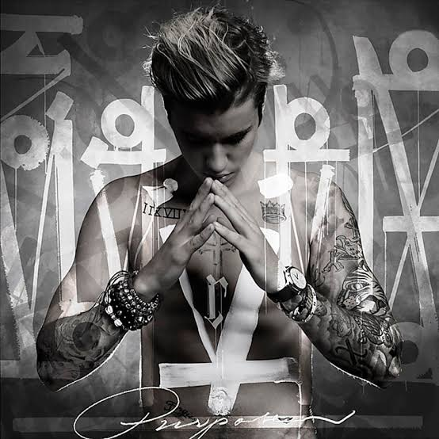
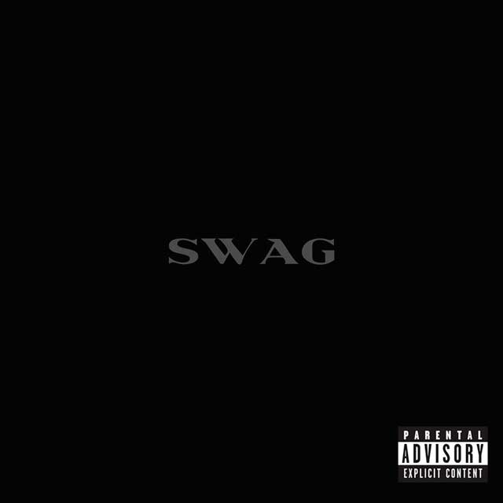

Discografía Oficial de Estudio
Detalle y tracklist de las obras musicales publicadas por Justin Bieber a nivel mundial.
My World 2.0 (2010)
[PORTADA:  ]
]
Canciones Destacadas: Baby, One Time, Somebody to Love.
Under the Mistletoe (2011)
[PORTADA: ]
Canciones Destacadas: Mistletoe, All I Want for Christmas Is You.
Believe (2012)
[PORTADA:  ]
]
Canciones Destacadas: Boyfriend, As Long as You Love Me, Beauty and a Beat.
Journals (2013)
[PORTADA:

]Canciones Destacadas: All That Matters, Heartbreaker, Confident.
Purpose (2015)
[PORTADA:  ]
]
Canciones Destacadas: Sorry, What Do You Mean?, Love Yourself.
Changes (2020)
[PORTADA:  ]
]
Canciones Destacadas: Yummy, Intentions, Forever.
Justice (2021)
[PORTADA:  ]
]
Canciones Destacadas: Peaches, Ghost, Holy, Hold On.
Swag (2025)
[PORTADA:

]Canciones Destacadas: Daisies, Yukon.